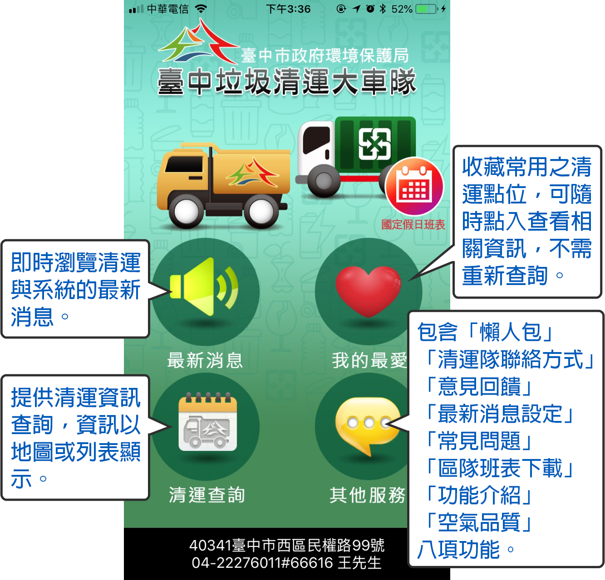
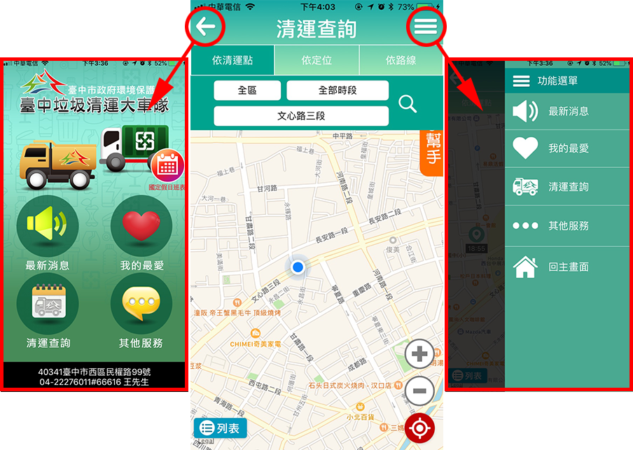
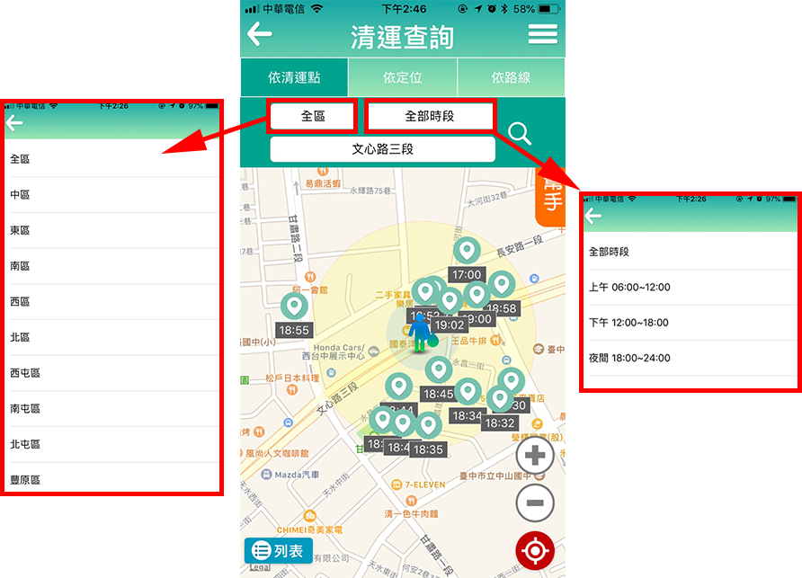
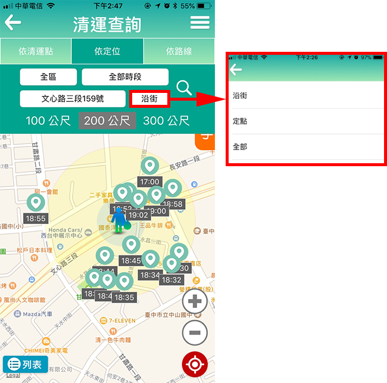
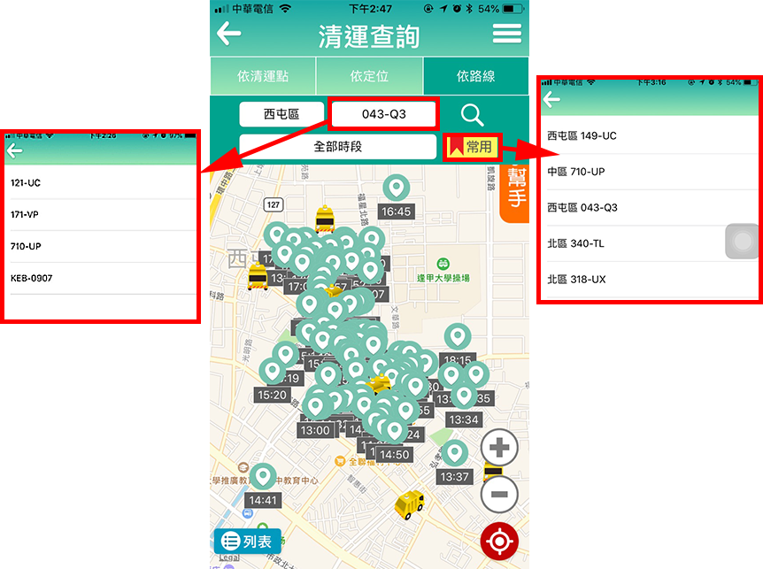
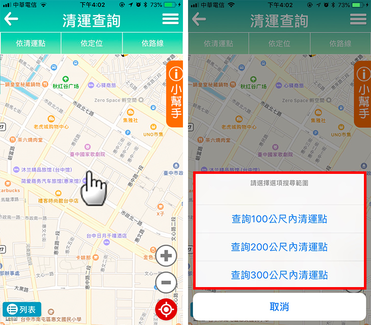
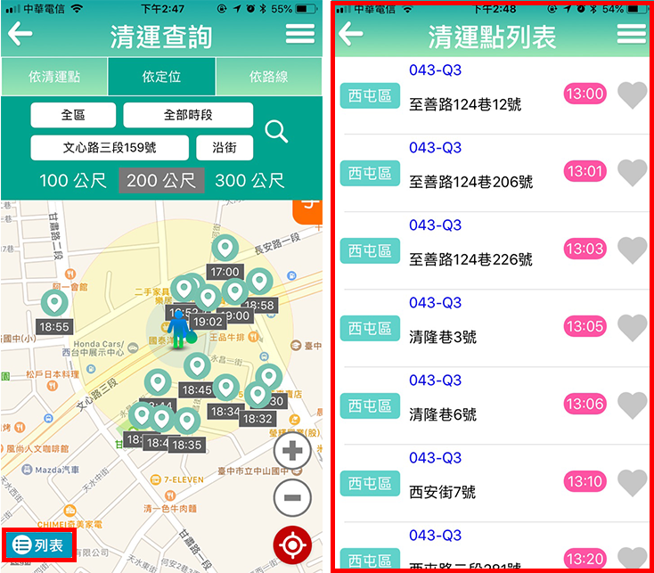

功能介紹

＊各功能頁面皆提供返回及列表功能鍵，方便進行各功能切換。

3.清運查詢
提供「依清運點」、「依定位」、「依路線」以及「長按定位」四種方式查詢清運點，並可於左下角「列表」中查看所有清運點列表。
(1)依清運點：請先選擇行政區、時段，並輸入清運點關鍵字查詢相關清運點。

(2)定位：請先選擇行政區、時段，並輸入地址關鍵字及範圍(100公尺/200公尺/300公尺)，依地址定位查詢附近清運點。

(3)依路線：選擇行政區及車牌後，可查詢該路線全部清運點；並可用「常用」功能，直接選擇最常查詢之五筆車號。

(4)長按定位：長按地圖上任一點，並選擇範圍(100公尺/200公尺/300公尺)，即可查詢該位置附近之清運點。

(5)列表：點擊左下角「列表」，可切換地圖上之清運點，以列表方式查看清運點清單。
